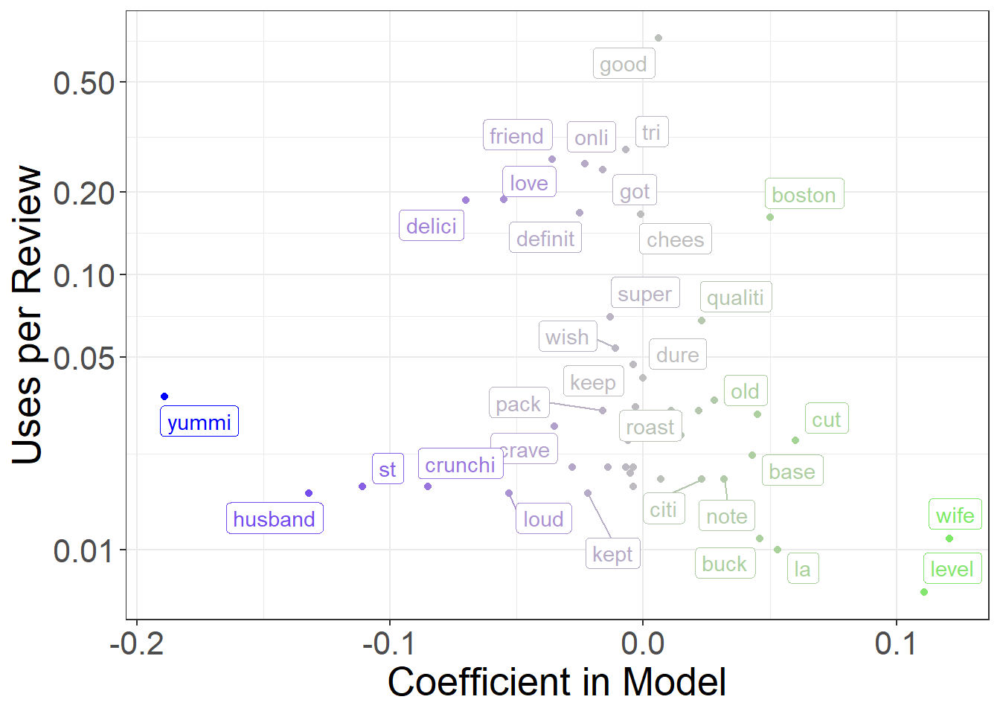

Text Analysis for SOcial Scientists and Leaders
Problem Set-1
In Part 2 of the provided code, you learned how to build an ngram model to predict the price of different restaurants. You split your data in two. You trained a model to predict restaurant price in one half, and tested the model’s accuracy in the other half. You also plotted the coefficients from the model. For the next three questions, complete the exact same workflow for one other quantity of interest. You are allowed to build a model to detect either gender (look for the “male” variable) or star rating (look for the “stars” variable). The choice is up to you!
1. Produce a plot showing the frequencies and coefficients of the features in your model. Makesure it is easy to read!
1. Report the percentage accuracy of the model you trained, using the held-out data, and write a few sentences interpreting the results. What features seemed to be the best predictors? How do you think you could improve the model?
The model accuracy is 58.43%. The best predictor turns out to be whether reviewer mentions about his/her partner in the review. Therefore, if you mention your wife in your reviews, the review is more likely to written by the husband. We could improve this model by using bi-grams or a combination of n-grams.
|
Model Predictions |
Total |
||
|---|---|---|---|
Female |
Male |
||
| Actual Gender | |||
| Female | 482 (34%) | 349 (25%) | 831 (59%) |
| Male | 227 (16%) | 359 (25%) | 586 (41%) |
| Total | 709 (50%) | 708 (50%) | 1,417 (100%) |